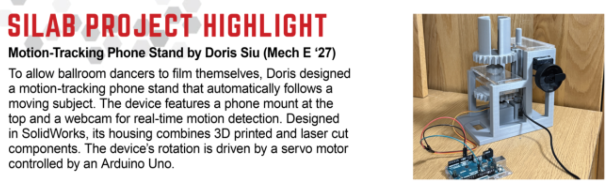

Motion-Tracking Phone Mount
As a competitive ballroom dancer, I often move out of frame when filming myself practice because of the dynamic movements. This inspired me to make a motion-tracking phone mount that follows a moving subject, allowing dancers to travel freely across the floor while having all details captured.

Recognition
Featured in Boston University College of Engineering BTEC-SILab Newsletter

Published in the Sept 2025 Edition of the BTEC-SILab Newsletter
Objectives
| Constraint | Metric |
|---|---|
| Portability | Easily transportable to practice rooms or competitions |
| Tracking Precision | ±10° angular deviation from subject position |
| Budget | < $150 BOM |
| Stability and Load Support | Support weight of standard cellphone + any accessories, approx. 250g, and ensure filming quality when rotating |
| Autonomous | Untethered operation |
Initial Design Choices
A webcam captures the subject, whose position is identified and digitized using Computer Vision. A Python program maps the subject’s position into rotational degrees. This data is transmitted to an Arduino via serial communication. To ensure smooth operation, the Arduino converts these digital commands into Pulse Width Modulation (PWM) signals, which dictate the precise angle of the servo motor.
The device operates untethered, powered by a Raspberry Pi 5 and 9V batteries. The structural housing is fabricated from 3D-printed PLA and laser-cut 6mm acrylic. To prevent the weight of the phone from straining the motor, the servo is connected to a driver gear. This gear engages a series of idler gears on a vertical shaft, which ultimately turns a driven gear attached to the phone mount. This mechanical advantage allows the mount to rotate in the same direction and distance as the driver gear while isolating the motor from direct vertical load.
To account for phone accessories (such as the PopSocket on the back of my phone) and ensure the phone sits securely on the stand, I designed a dual hollow-hemisphere mount. This geometry allows the phone to nest securely within the cradle while providing dedicated clearance for rear-mounted accessories.
Troubleshooting
| Challenge with Initial Design | Action |
|---|---|
| Vertical misalignment between driver/driven gears and 2 small idler gears, positioned where the big gears are on the y-axis. | Increased idler gear face width, turning dual-idler setup to 1 elongated idler gear. |
| Supporting walls had narrow clearances, were too short, and had small surface area on top, which prevented secure attachment of laser-cut plates and interfered with gear rotation (Figure 1). | Adjusted walls to have more internal clearance, height, and top surface area to accommodate laser-cut interface and gear rotation. |
| Gap between driven gear and small gear in x axis (Figure 1). | Remeasured and corrected dimensions in Solidworks. |
| Mount design featured asymmetric wall heights: 1 wall shortened to prevent potential occlusion of the phone's wide-angle camera lens. But this reduced mechanical contact area, leading to lateral instability during high-speed servo tracking (Figure 2). | Conducted Field-of-View audit using the physical mockup & discovered full-height wall on both sides would not interfere with the camera's optical path; Redesigned mount with symmetrical wall heights. |

Figure 1: Initial mockup with defined axes and challenging parts pointed out.

Figure 2: Initial hollow-hemisphere mount design with asymmetric wall heights (CAD and mockup).
Result & Discussion
Metric Achievements
- The combination of webcam, computer vision, Arduino, and servo motor achieved the effect of motion-tracking I planned.
- The phone mount accurately turned with subject within ~6ft; however, it does not function well when there are other moving subjects around that distracts it from the main subject I wish to capture.
- The phone and its accessories are held securely in the dual-hemisphere mount design. The video filmed by the phone in the stand is not shaky and is of quality.
- The project is completed within budget.
Video: Demostration of motion-tracking phone mount function
What didn't worked
- University wifi had a firewall that disabled Raspberry Pi usage, so the device never became fully autonomous as I defined it.
- 9V battery is too weak to power everything.
- Angular deviation ±20° from centriode of moving object, 10° more than my original goal.
- The housing design is too bulky and “boxy” for transport.
Lessons I learned
- Importance of assembly before printing out the physical part → helps visualize the shortcomings of my design before physically producing the parts just to realize they don’t fit together properly and wasting materials
- Can sketch laser cut parts in CAD too → better visualization when assembling the parts together; sketch can also be exported as DXF/DWG to be laser cut
Future Improvements
- Design more concise and rounded housing: The current device is too big and all the components are exposed, making it difficult to carry around. I would make a smaller enclosure and conceal internal electronics, allowing it to be more transportable. Additionally, I would transition to a more rounded design to make the device more ergonomic and to increase structural integrity.
- Use a USB power bank (with 5V output) or other more powerful batteries to power Raspberry Pi and Arduino.
- Possibly install more webcams around the device to achieve a 360° tracking.